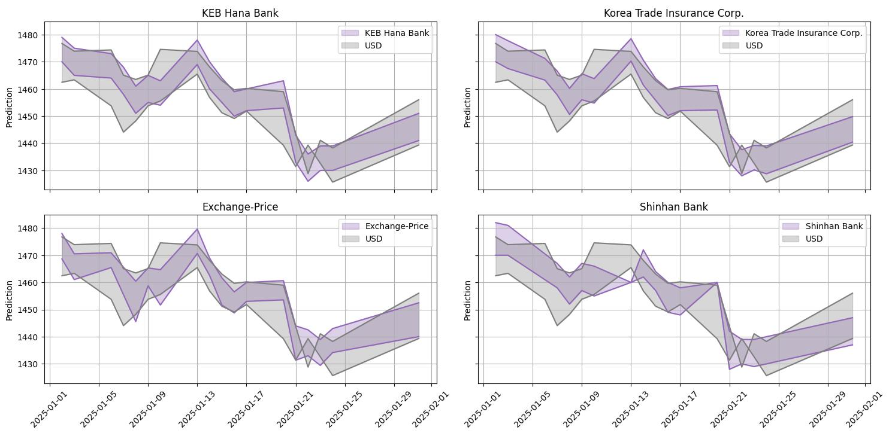
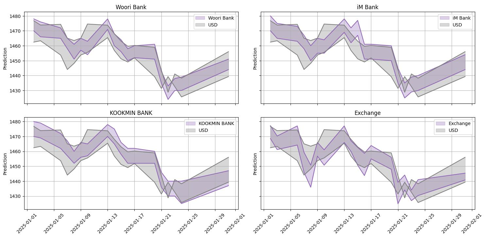
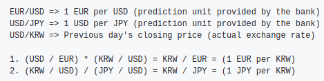

This article introduces the foreign exchange market prediction models Exchange and Exchange-Price. We will examine how these models were trained, their performance, and the potential benefits when applied to the financial market.
Generative AI is an artificial intelligence technology that learns from large datasets to create new content. It can process various types of data, such as text, images, and audio. In particular, it can be a powerful tool for analyzing data and predicting future trends in the financial and economic sectors. The main advantages of Generative AI include:
The foreign exchange market is one of the most volatile financial markets, where precise predictions through data analysis are essential. In the past, forex predictions relied on the experience of experts and statistical models, but Generative AI can analyze large-scale market data in real-time and learn complex volatility patterns, allowing for more precise predictions. Generative AI can play the following roles in the financial market:
Based on these capabilities, we developed AI models optimized for foreign exchange market prediction, namely Exchange and Exchange-Price.
There are various Generative AI models, but to build a model optimized for exchange rate analysis and prediction, we chose Meta's Llama 3.1 8B model. The Llama model is optimized for learning large-scale data and excels in financial data analysis and time-series prediction.
The key performance features of the Llama 3.1 8B model are as follows:
The foreign exchange market is a complex market that cannot be easily analyzed with simple time-series predictions. Various factors such as economic news, policy changes, and global financial flows influence exchange rate fluctuations, so a model that can effectively process this unstructured data is needed.
The Llama 3.1 8B model has a strength in natural language-based data processing and is optimized for understanding context and meaning. This allows it to perform various functions beyond simple numerical predictions, such as market analysis report generation, summarizing economic trends, and explaining risk factors.
Thanks to these characteristics, the Llama 3.1 8B model can provide more precise and reliable results than traditional financial prediction models and can be effectively applied in the uncertain foreign exchange market.
The Exchange and Exchange-Price models, built on the Llama 3.1 8B model, are AI systems that analyze financial market data and predict exchange rate fluctuations.
The Exchange model receives financial market data, analyzes key factors influencing exchange rate fluctuations, predicts market trends, and generates analysis reports based on this information. It focuses on explaining market volatility by considering various data, such as financial news, economic indicators, and policy changes.
The Exchange-Price model is focused on exchange rate prediction, using the natural language processing capabilities of the LLM to analyze market volatility and predict the exchange rates of major global currencies (USD, JPY, EUR, etc.). It is specialized in quantitatively performing exchange rate predictions and provides more precise prediction results by learning from various input data.
The Exchange and Exchange-Price models are built on Meta's Llama 3.1 8B architecture and were developed using SFT (Supervised Fine-Tuning) and DPO (Direct Preference Optimization) techniques to maximize exchange rate prediction performance.
SFT (Supervised Fine-Tuning) is a process that utilizes supervised learning to improve the model's prediction accuracy. It is a critical technique for optimizing the model to better reflect the complex patterns of the financial market and to consider unstructured data such as news and economic indicators, beyond simple statistical predictions.
During the SFT process, a variety of training data were used. Text-based data such as financial news, economic indicators, and central bank announcements, along with exchange rate time-series data for currencies like USD, EUR, and JPY, were incorporated to comprehensively capture exchange rate fluctuation patterns. In addition, exchange rate response patterns to major policy changes were analyzed to increase the reliability of the prediction model.
DPO (Direct Preference Optimization) is a process that optimizes the model by incorporating user feedback to enhance its practical usability. Since learning only from past data does not fully reflect real market conditions, feedback from financial experts was integrated to enable more practical predictions.
The DPO technique was applied by having the AI generate multiple prediction scenarios, which were then evaluated and feedback provided by financial experts. This process not only increased the reliability of the predictions but also encouraged the model to prioritize providing more interpretable analysis results. This allowed users to make better decisions based not only on numerical predictions but also on the interpretations and analyses provided by the model.
| Model | Key Features | Training Data | Application Method |
|---|---|---|---|
| Exchange | Market analysis + exchange rate prediction | Exchange rate time-series data, key economic indicator time-series data, financial news | Analysis reports (explaining correlations between specific indicators and exchange rates, analyzing the potential impact of major news on exchange rate fluctuations, short-term exchange rate trend forecasts, etc.), exchange rate prediction for major currencies |
| Exchange-Price | Specialized in exchange rate prediction | Exchange rate time-series data, key economic indicator time-series data, financial news | Exchange rate prediction for major currencies |
Here, we will explain the methods used to evaluate the Exchange and Exchange-Price models.
Ranking evaluation is a process that compares multiple prediction values to measure their relative accuracy. To evaluate the accuracy of the predictions, MAPE (Mean Absolute Percentage Error) was calculated to determine the ranking. This method was used to assess the exchange rate prediction performance of financial institutions and the Exchange model.
MAPE is a metric that expresses the average error between predicted and actual values as a percentage, where a lower value indicates higher prediction accuracy. The MAPE for the highest (High) and lowest (Low) predicted values of the USD exchange rate during January 2025 was calculated, and the ranking was based on these values.
The table below shows the ranking determined by calculating the MAPE for the USD exchange rate predictions.
| Rank | Site | Time | USD MAPE(high,low) |
|---|---|---|---|
| 1 | KEB Hana Bank | 09-26 | 0.24 |
| 2 | Korea Trade Insurance Corp. | 09-26 | 0.25 |
| 3 | Exchange-Price | 00-24 | 0.26 |
| 4 | Shinhan Bank | 09-26 | 0.27 |
| 4 | Woori Bank | 09-26 | 0.27 |
| 6 | iM Bank | 09-26 | 0.30 |
| 6 | KOOKMIN BANK | 09-26 | 0.30 |
| 8 | Exchange | 00-24 | 0.32 |
The plot below shows the predicted high and low values for USD for each day in January 2025. By comparing these predictions to the actual USD values, we can observe how each site/model performed and the differences in their predictions.
 The global currency ranking was determined by calculating the MAPE (Mean Absolute Percentage Error) for the exchange rate predictions of EUR (Euro) and JPY (Japanese Yen), excluding USD.
However, there were challenges in calculating the global currency rankings. Among the existing banks, only one provided exchange rate predictions for global currencies based on KRW (South Korean Won), while most banks either did not provide predictions for global currencies or only provided exchange rate predictions based on USD. This made it difficult to calculate the MAPE for global currencies.
To address this issue and evaluate KRW-based exchange rate predictions, a method was applied where the exchange rates were converted based on the previous trading day's closing price, and the collected prediction values were compared. The following formula was used for the exchange rate conversion.
| Rank | Site | Time | EUR MAPE(high,low) | JPY MAPE(high,low) |
|---|---|---|---|---|
| 1 | Exchange-Price | 00-24 | 0.20 | 0.32 |
| 2 | Exchange | 00-24 | 0.22 | 0.43 |
| 3 | iM Bank | 09-26 | 0.36 | 0.52 |
| 4 | KOOKMIN BANK | 09-26 | 0.33 | 0.58 |
| 5 | KEB Hana Bank | 09-26 | 0.45 | 0.61 |
| 6 | Shinhan Bank | 09-26 | 0.52 | 0.63 |
| - | Woori Bank | - | Not provided | Not provided |
| - | Korea Trade Insurance Corp. | - | Not provided | Not provided |
Accuracy evaluation is a metric that measures how close the predicted values are to the actual values. To assess the prediction accuracy, MAPE (Mean Absolute Percentage Error) was calculated.
In general, the exchange rate predictions provided by financial institutions focus on High (maximum) and Low (minimum) values, and predictions for the Close value are often not provided. Therefore, direct comparisons with other banks and financial institutions are difficult. As a result, the prediction results of the Exchange and Exchange-Price models were used to calculate the MAPE for the High, Low, and Close values of each currency and evaluate the accuracy.
| Model | Time | USD MAPE(high,low,close) |
|---|---|---|
| Exchange | 00-24 | 0.38 |
| Exchange-Price | 00-24 | 0.31 |
| Site | Time | EUR MAPE(high,low,close) | JPY MAPE(high,low,close) |
|---|---|---|---|
| Exchange | 00-24 | 0.30 | 0.55 |
| Exchange-Price | 00-24 | 0.23 | 0.42 |
Robustness evaluation is the process of verifying whether a system or model operates reliably in the face of various environmental changes or exceptional situations. It tests whether the developed model can maintain performance without being affected by data uncertainties, noise, errors, or unexpected changes.
To evaluate the robustness of the Exchange and Exchange-Price models, various data transformation methods were applied to the exchange rate predictions in January 2025. By analyzing how MAPE (Mean Absolute Percentage Error) changes depending on the input data transformation methods, the robustness of the models was assessed.
| Model | Task | MAPE(high,low) | MAPE(high,low,close) | high | low | close |
|---|---|---|---|---|---|---|
| Exchange | Normal | 0.32 | 0.38 | 0.31 | 0.33 | 0.51 |
| Exchange | Random date | 0.26 | 0.33 | 0.25 | 0.27 | 0.47 |
| Exchange | Masking | 0.31 | 0.36 | 0.24 | 0.37 | 0.48 |
| Exchange-Price | Normal | 0.26 | 0.30 | 0.21 | 0.30 | 0.40 |
| Exchange-Price | Random date | 0.32 | 0.40 | 0.31 | 0.33 | 0.56 |
| Exchange-Price | Masking | 0.36 | 0.42 | 0.36 | 0.36 | 0.53 |
| Model | Task | MAPE(high,low) | MAPE(high,low,close) | high | low | close |
|---|---|---|---|---|---|---|
| Exchange | Normal | 0.22 | 0.30 | 0.23 | 0.22 | 0.46 |
| Exchange | Random date | 0.32 | 0.43 | 0.29 | 0.36 | 0.62 |
| Exchange | Masking | 0.30 | 0.37 | 0.26 | 0.36 | 0.51 |
| Exchange-Price | Normal | 0.20 | 0.23 | 0.18 | 0.23 | 0.29 |
| Exchange-Price | Random date | 0.25 | 0.29 | 0.23 | 0.26 | 0.38 |
| Exchange-Price | Masking | 0.28 | 0.32 | 0.30 | 0.26 | 0.40 |
| Model | Task | MAPE(high,low) | MAPE(high,low,close) | high | low | close |
|---|---|---|---|---|---|---|
| Exchange | Normal | 0.43 | 0.55 | 0.33 | 0.52 | 0.81 |
| Exchange | Random date | 0.37 | 0.45 | 0.33 | 0.42 | 0.59 |
| Exchange | Masking | 0.41 | 0.75 | 0.46 | 0.36 | 1.44 |
| Exchange-Price | Normal | 0.32 | 0.42 | 0.32 | 0.31 | 0.62 |
| Exchange-Price | Random date | 0.37 | 0.49 | 0.39 | 0.35 | 0.73 |
| Exchange-Price | Masking | 0.43 | 0.51 | 0.42 | 0.44 | 0.68 |
The Exchange and Exchange-Price models, built on the generative AI model Llama 3.1 8B, would bring a highly innovative introduction of Generative AI to the financial market if applied to the real-world financial industry. Since the models use integrated time-series datasets during training, it maximizes the efficiency of model training and inference, enabling fast learning and achieving the following effects:
Unlike traditional services that rely on past experiences and are limited in volatile environments, the LLM-based AI forex trader can analyze vast global data in real-time with high data analysis capabilities and make precise predictions. Furthermore, it provides user-friendly financial services by explaining predictions in a way that even non-experts can easily understand.
Being an AI-based service rather than human-based, it can be automated and operated 24/7, providing financial information whenever users need it, anywhere. The model can quickly adapt to market volatility by learning various patterns and swiftly capturing changes in real-time data regarding exchange rate fluctuations through multiple leading indicators.
The model has also demonstrated performance that surpasses traditional human-based predictions in evaluation metrics, making the Exchange and Exchange-Price models highly applicable and valuable.